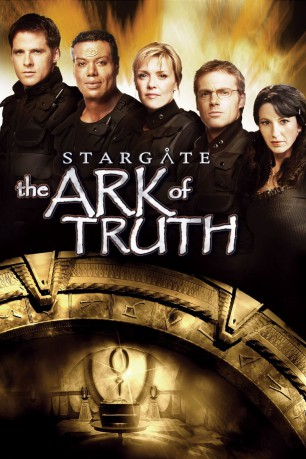

#2787 Stargate: The Ark of Truth - Die Quelle der Wahrheit
Alternativ: Stargate: The Ark of Truth
 
 IMDB-Wertung: 7.4 / 10
IMDB-Wertung: 7.4 / 10  Metascore: 0
Metascore: 0 
Die Armeen der Ori planen den finalen Angriff auf die Erde. Die letzte Hoffnung, die Feinde doch noch zu besiegen, liegt in der "Ark of Truth", einem mächtigen Antikerartefakt. Daniel ist überzeugt, dass sich die "Ark of Truth" in der Heimatgalaxie der Ori be-findet. Das SG-1-Team geht an Bord der "Odyssey" und bricht in die weit entfernte Galaxie auf. Während das Team auf zwei gefährliche Gegner trifft, verfolgt das IOA (International Oversight Advisory) auf der Erde einen eigenen Plan.
Jahr: 2008
Dauer: 101 Minuten
FSK:
Land: USA Studio: MGM Home EntertainmentTonspuren: DD5.1 - ,
Untertitel:
Auflösung: 1080p (1920x1080) Größe: 8427 MB
Genre: Action, Drama, Sci-Fi, Abenteuer, Fantasy
Regisseur: Robert C. Cooper
Drehbuch: Robert C. Cooper, Jonathan Glassner, Brad Wright
Soundtrack: Joel Goldsmith
Darsteller:
Datei: X:\3-Trilogie(N-Z)\Stargate\Stargate The Ark of Truth - Die Quelle der Wahrheit (2008, FSK, 1920x1080).mkv seit 14.12.2015
Festplatte: HD Collection-3(N-Z)-6(A-Z)
 Alle Filme aus Gruppe '3-Trilogie(N-Z)\Stargate'
Alle Filme aus Gruppe '3-Trilogie(N-Z)\Stargate'